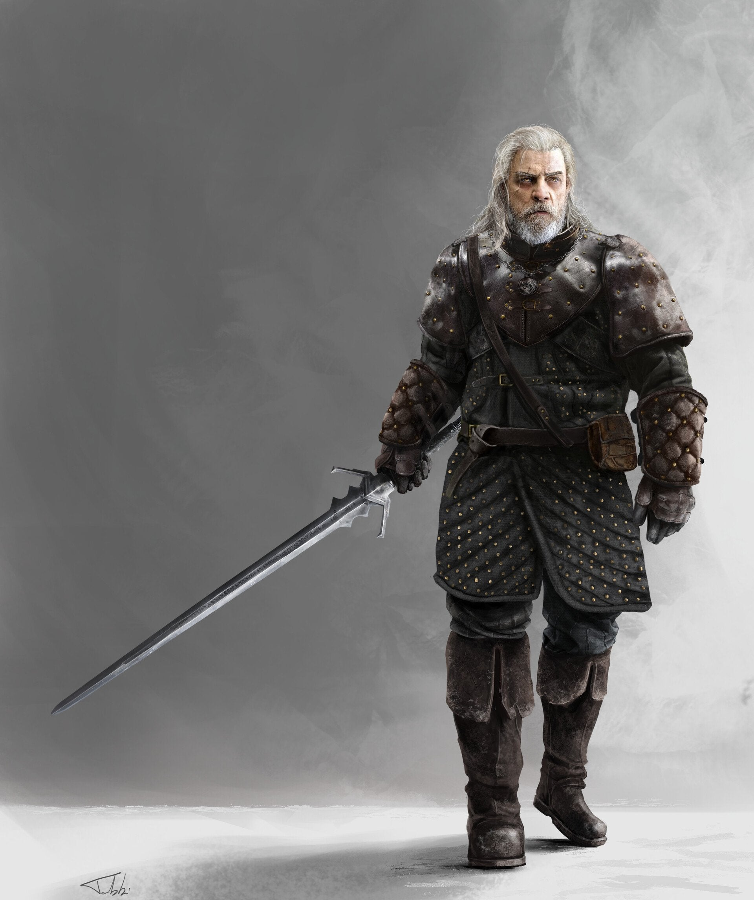

Vesemir nejstarší zaklínač ze Školy vlka a možná nejstarší zaklínač vůbec. Jako jeden z mála a nejstarší z těch, kteří přežili útok lůzy na hrad, se stal po tomto útoku velmistrem Školy. Předtím býval učitelem šermu. Vychoval poslední generaci několika málo zaklínačů, a byl pro ně něco jako otec. Pro Ciri jako dědeček. Lpěl na starých tradicích a vyžadoval to i po ostatních. I přes své stáří ještě občas chodil mimo hrad na "stezku". Přestože již Škola nefungovala tak jako dřív, nebránil se brát do hradu nové obyvatele, tak jako v případě žáka Lea nebo Ciri. Také připustil přítomnost zaklínače z jiné Školy, tak jako v případě Coena, který zde trávil zimu v době, kdy sem přijela Ciri.